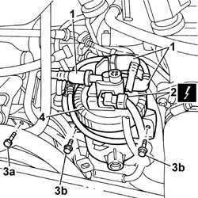

1044B10 FUEL FILTER ASSEMBLY - R + R OR REPLACE
- Path
- Procedures > 10 ENGINE > 1044 FUEL CIRCUIT PUMP/S AND DEVICES > 1044B FUEL FILTERS > 1044B10 FUEL FILTER ASSEMBLY - R + R OR REPLACE
- Kind
- repair procedure (removal / refitting; the operation number is the code)
- Applies to
- engines: 2.0 16V JTD, 2.2 16V JTD; all production periods
- Interactive page
- https://sloeber94.github.io/elrnDB-fUlss/en/#/179006994
Applies to: engines: 2.2 16V JTD; all production periods
 Removing
Removing
 Refitting
Refitting- Disconnect the negative battery terminal.
1. Disconnect the fuel pipes working on the rapid connectors.
2. Disconnect the electrical connection.
3. Undo the bolt fixing the wiring duct (3a) and move it aside, undo the bolts fixing the fuel filter (3b) to the mounting.
4. Remove the fuel filter assembly.

Applies to: engines: 2.2 16V JTD; all production periods
Refitting
Removing- Place the fuel filter assembly in position.
- Tighten the two bolts fixing the filter.
- Tighten the bolt fixing the wiring duct.
- Connect the electrical connection.
- Connect the fuel pipes with rapid connectors.
- Connect the negative battery terminal.
Applies to: engines: 2.0 16V JTD; all production periods
Removing
Refitting- Disconnect the negative battery terminal.
1. Disconnect the fuel pipes working on the rapid connectors.
2. Disconnect the electrical connection.
3. Undo the bolt fixing the wiring duct (3a) and move it aside, undo the bolts fixing the fuel filter (3b) to the mounting.
4. Remove the fuel filter assembly.
Applies to: engines: 2.0 16V JTD; all production periods
Refitting
Removing- Place the fuel filter assembly in position.
- Tighten the two bolts fixing the filter.
- Tighten the bolt fixing the wiring duct.
- Connect the electrical connection.
- Connect the fuel pipes with rapid connectors.
- Connect the negative battery terminal.